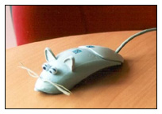
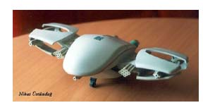

ITChika
Chief
Bubwit: Panay-panay ang paglilibot ng ating mga kapuso
sa ITC itong mga nakaraang buwan. Inakyat ang Pulag, bumiyahe
ng Samar, Bohol, bumalik sa tuktok ng Pulag, at may gumawi
pa ng Baguio... wala talagang kapagod-pagod. Sa kabila ng
mga pagbibiyaheng ito, di pa rin pahuhuli sa Chika ang inyong
Chief Bubwit dahil sa kanyang mga Field Reporters...
Field Reporter number One, please come in:
Hello Chief Bubwit at sa ating mga mambabasa...katatapos lang
ng kasal nitong anak ni Aling Lydia na si Baby Bro at kasalukuyang
nasa kalagitnaan tayo ngayon ng kanilang magarbong handaan.
At ngayon ay kasalukuyang ginaganap ang "Garter ceremony"
kung saan pinagpapasahan ng mga bachelors ang isang garter.
Sinasabing ang hintuan ng garter na ito sa s'ya raw susunod
na ikakasal. Ayan na chief bubwit, ipinasa na ang garter kay
Makisig, kay Mr. Blue, kay Ogie da Pogi, kay Big Bro...at
huminto na ang music! Si Big Bro! Si Big Bro ang nakakuha
ng garter!!! Chief Bubwit, abangan na lang po natin ang susunod
na kabanata kung magkakatotoong ang panganay na anak ni Aling
Lydia na si Big Bro na nga ang susunod na ikakasal. Ito po
si Field Reporter No. 1 para sa DZ-ITC reporting from Samar.
Back to you Chief Bubwit.
Chief Bubwit: Mga mambabasa, ito'y isang
malaking kaganapan na kailangan nating abangan... OK, now,
let's read it from Field Reporter number Two...
Please
come in, Field Reporter number Two:
Chief Bubwit, napakaginaw ngayon dito sa tuktok ng Pulag,
at talaga nga namang saktong-sakto ang klima para sa mga magsing-irog.
Tinatayang mga limang magsing-irog mula sa ITC ang naririto
ngayon at akin silang matiyagang minamanmanan. hehe! Sa loob
ng siyam na oras naming paglalakbay paakyat ng bundok ay kitang-kita
ng matatalim kong mga mata ang kakaibang pag-trato nitong
si Mr. Blue at Ms. Pink sa isa't isa. Itong si Mr. Blue ay
talaga namang ipinagbaon pa ng pagkain si Ms. Pink at s'ya
pa mismo ang bumuhat sa mga mabibigat na dala-dalahin ng iniirog.
Mapapansin din na tanging kay Mr. Blue lang nagpapa-alalay
itong si Ms. Pink sa pag-akyat sa matatarik na parte ng bundok.
Madalas din na laging nauuna ang dalawa sa paglalakad, para
bang ayaw ng may istorbo sa paligid nila. Sa ating mga tagasubaybay,
kayo na po ang bahalang humusga kung talagang sila na nga.
Ito po si Field Reporter No. 2 para sa DZ-ITC reporting from
Mt. Pulag. Back to you Chief Bubwit.
Chief Bubwit: Talaga nga namang makulay ang
pag-iibigang Mr. Blue at Ms. Pink ngunit pilit pa rin nila
itong itinatanggi sa publiko. At eto, sa ating Flash Report,
sinasabing sa ITC Valentine pakulo, ilang pirasong papel na
puso ang pinag-putol-putol sa tatlong piraso. Bawa't isa ay
kumuha ng isang piraso at paunahang mahanap ang 2 pang piraso
ng puso nila. Get's n'yo na? Ok, at akalain mo ba namang,
sa dinami-dami ng pirasong puso ay si Mr. Blue at Ms. Pink
pa raw ang magka-match! Ito lang ang nasabi ni Mr. Blue ng
amin s'yang kapanayamin - Mr. Blue: I tried kanina yung puso
namin, di nag match e. do you think it's a sign? We think
it's a sign Mr. Blue. Ok now, eto na po ang ating Field Reporter
number 3...
Field
Reporter number Three, pasok!
Isang napakagandang kaganapan Chief Bubwit, kaka-ulat lang
ni Field Reporter number One na itong panganay na anak ni
Aling Lydia na si Big Bro ang nakakuha ng garter noong kasal
ng kanyang mas nakababatang kapatid. At eto nga Chief Bubwit,
nagsisimula ng umarangkada sa panliligaw itong si Big Bro.
Isang dosenang mapupulang rosas ang hawak-hawak ngayon ni
Big Bro at kasalukuyang nag-iisip kung ano ang kanyang magiging
diskarte sa pag-akyat ng ligaw. Nandito sa mga panahong ito
ang ilang kaibigan ni Big Bro na kasalukuyang nagbibigay sa
kanya ng ilang mga payo. At ito lang ang masasabi ni Big Bro:
"wag n'yo na akong pakialaman, alam ko na kung anong
gagawin ko." O..ha...hanggang dito na lang po at baka
mabara pa ako nitong si Big Bro. Ito po si Field Reporter
No. 3 para sa DZ-ITC reporting from G307. Back to you Chief
Bubwit.
Chief Bubwit: Grabe, mga kapuso! Grabe ang
katarayan ni Big Bro! Bawal yan ha Big Bro. Kaya't for my
final salvo, minsan ang puso, sa unang tingin, hindi match
pero 'pag in-analyze mo maiigi, match na match talaga! 'di
ba Mr. Blue? Para naman kay Ms. Pink at Big Bro, ganyan talaga
pag nagmamahal, di maiiwasang tuksuhin. Ngunit, subalit, datapwat...
it's better to love and be ridiculed (by peers) than not having
loved at all. So, mga kapuso, di ba't napakadali ng ating
mga ulat ngayon? Paalis na kase ako eh..hehe...Kaya't pag
di n'yo pa naman nahulaan ang mga ito eh, ambot sa imo! Well,
it's sad but I have to go for now... this is your Chief Bubwit
signing off. Pero 'di ibig sabihin nito ay mawawala na ang
ITChikka! Marami na ho akong na-train na mga bubwit at field
reporters to take over.
|